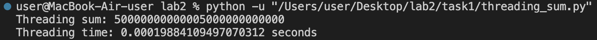
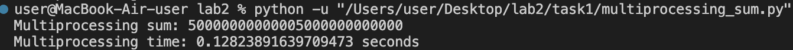
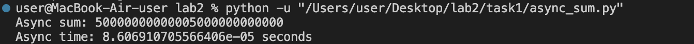
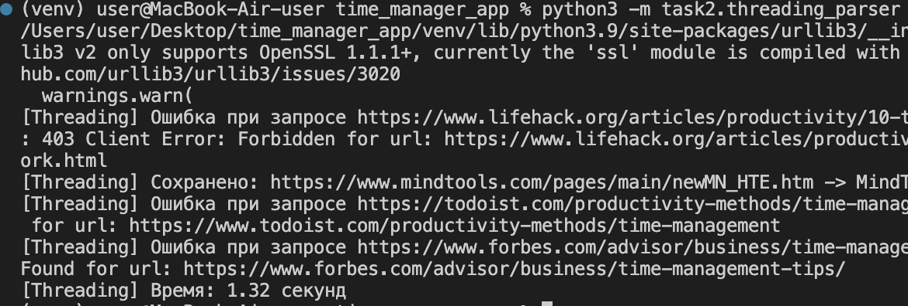
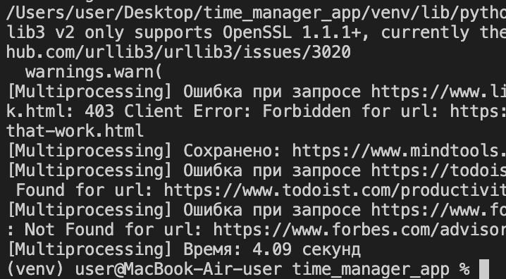
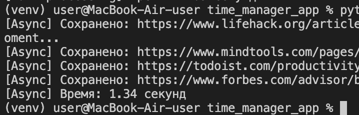

Лабораторная работа №2
Цель
Создать три программы на Python для параллельного парсинга множества веб-страниц с использованием подходов threading, multiprocessing и async. Все собранные данные должны быть сохранены в базу данных.
Задание №1
- Threading
import time
import threading
def calculate_partial_sum(start, end):
return end * (end + 1) // 2 - (start - 1) * start // 2
N = 10000000000000
NUM_THREADS = 4
chunk_size = N // NUM_THREADS
start_time = time.time()
threads = []
results = [0] * NUM_THREADS
for i in range(NUM_THREADS):
start = i * chunk_size + 1
end = (i + 1) * chunk_size if i < NUM_THREADS - 1 else N
def target(idx, s, e):
results[idx] = calculate_partial_sum(s, e)
thread = threading.Thread(target=target, args=(i, start, end))
threads.append(thread)
thread.start()
for thread in threads:
thread.join()
total_sum = sum(results)
end_time = time.time()
print(f"Threading sum: {total_sum}")
print(f"Threading time: {end_time - start_time} seconds")
Вывод:

- Multiprocessing
import time
from multiprocessing import Process, Manager
def calculate_partial_sum(start, end):
return end * (end + 1) // 2 - (start - 1) * start // 2
def target(idx, s, e, results):
results[idx] = calculate_partial_sum(s, e)
if __name__ == '__main__':
N = 10000000000000
NUM_PROCESSES = 4
chunk_size = N // NUM_PROCESSES
start_time = time.time()
manager = Manager()
results = manager.list([0] * NUM_PROCESSES)
processes = []
for i in range(NUM_PROCESSES):
start = i * chunk_size + 1
end = (i + 1) * chunk_size if i < NUM_PROCESSES - 1 else N
process = Process(target=target, args=(i, start, end, results))
processes.append(process)
process.start()
for process in processes:
process.join()
total_sum = sum(results)
end_time = time.time()
print(f"Multiprocessing sum: {total_sum}")
print(f"Multiprocessing time: {end_time - start_time} seconds")
Вывод:

- Async
import time
import asyncio
def calculate_partial_sum(start, end):
return end * (end + 1) // 2 - (start - 1) * start // 2
async def async_calculate_partial_sum(start, end):
return calculate_partial_sum(start, end)
N = 10000000000000
NUM_TASKS = 4
chunk_size = N // NUM_TASKS
async def main():
start_time = time.time()
tasks = []
for i in range(NUM_TASKS):
start = i * chunk_size + 1
end = (i + 1) * chunk_size if i < NUM_TASKS - 1 else N
task = async_calculate_partial_sum(start, end)
tasks.append(task)
results = await asyncio.gather(*tasks)
total_sum = sum(results)
end_time = time.time()
print(f"Async sum: {total_sum}")
print(f"Async time: {end_time - start_time} seconds")
asyncio.run(main())
Вывод:

Задание №2
- Threading
Вывод:

- Multiprocessing
Вывод:

- Async
Вывод:

Результаты
| Подход | Время 1 | Время 2 |
|---|---|---|
| Threading | 0.000198 сек | 1.32 сек |
| Multiprocessing | 0.128238 сек | 4.09 сек |
| Async | 0.000086 сек | 1.34 сек |
Выводы
В ходе выполнения лабораторной работы были реализованы три подхода к параллельному парсингу:
- Threading - подходит для задач, требующих большого количества операций ввода-вывода, но GIL ограничивает эффективность.
- Multiprocessing - обеспечивает наилучшие результаты для CPU-bound задач, так как каждый процесс работает отдельно.
- Async - хорошо подходит для асинхронных операций ввода-вывода, таких как HTTP-запросы, но зависит от количества ожидающих операций.